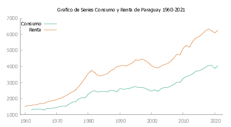

Estudio Teórico del Comportamiento del Consumo en Latinámerica y Caribe (Resumen)
Introducción
El modelo de consumo y renta surge de manera casi natural cuando un individuo se plantea un escenario del tipo ¿Qué pasaría si se destinara una parte de su renta a un fondo de ahorro?. Es así que se empieza con un planteamiento muy básico en el que el individuo esperaría que su ahorro lo ayude a afrontar crisis futuras. Sin embargo, esto es un poco ingenuo puesto que el individuo no tiene certeza de cuanto tiempo va a vivir, así como tampoco de si su ahorro lo ayudara en un momento de gran crisis. Es así que de manera natural se procede a generalizar la idea a un grupo de individuos, lo cual desencadena en lo siguiente ¿Todos los individuos se comportan de una manera similar?. A partir de esto se ramifica dos situaciones, la primera, considerar que todos los individuos tienen un comportamiento similar y por tanto realizar modelos con datos de medias; la segunda, es considerar que los individuos tiene comportamientos diferentes y por tanto buscar cual es el modelo que mejor describe esta realidad.
Revisión Bibliográfica
Al inicio de los años \(50\), el modelo que predomino el comportamiento de consumo y que fue utilizado por los macroeconomistas se inspiro en la “ley fundamental de la psicología” mencionada por (Keynes 1936) en la Teoría general. A ese momento, las limitaciones empíricas y teóricas del mencionado modelo se hicieron cada vez más notorias. Desde un punto de vista teórico, es difícil construir modelos coherentes basados en la optimización intertemporal del comportamiento que sean consistentes con la descripción de (Keynes 1936) en la “Ley fundamental de la psicología”. Desde el punto de vista empírico, parecía que el punto de vista de Keynes era incompatible con una serie de hechos, tanto a macro y micro nivel. A nivel agregado, por ejemplo, según (Orazio P. Attanasio y Weber 2010) se observó que la propensión marginal a consumir de la renta disponible fue menor en el corto plazo que a la larga. Por otro lado, en secciones cruzadas, las tasas de ahorro parecieron cambiar sistemáticamente con el nivel de rentas. Además, se observó que grupos de individuos con, niveles más bajos de rentas en media, tenían tasas de ahorro más altas que otros grupos con niveles más altos de renta en media esto se da en cualquier nivel de renta. Finalmente, se observó que las tasas de ahorro están sistemáticamente relacionadas a los cambios en los rentas, siendo mayor para las personas que experimentas aumentos de rentas y menor para las personas que experimentan rentas que disminuyen (ver, Katona 1949).
Todas estas observaciones contradecían claramente las implicaciones del modelo keynesiano y condujeron a la formulación de los modelos de ciclo de vida y de renta permanente (Modigliani y Brumberg 1980; Friedman 1957). Estos modelos combinaban consistencia teórica en el sentido de que las opciones intertemporales de consumo y ahorro se enmarcaban dentro de un problema de optimización coherente con la capacidad de ajustar la mayoría de los hechos mencionados en el párrafo anterior.
A nivel macro, es más probable que las fluctuaciones a corto plazo de la renta disponible estén dominadas por la varianza de las perturbaciones temporales que se promediarían a largo plazo (ver, Orazio P. Attanasio y Weber 2010).
El desarrollo de las ideas en las contribuciones iniciales de (Modigliani y Brumberg 1980; Friedman 1957) también llevó a la realización de otras implicaciones. En una versión simple del modelo del ciclo de vida, si las rentas tienen forma de joroba y disminuyen al momento de la jubilación, los consumidores ahorraran cuando sean jóvenes para respaldar el consumo en la última parte de la vida y desahorraran cuando sean mayores. (Modigliani y Brumberg 1980) luego demostraron que este hecho puede explicar la correlación entre el crecimiento agregado y el ahorro agregado: el crecimiento implica que, en un año dado, las cohortes más jóvenes, que están ahorrando, son ``más ricas’’ en términos de vida que las de mayor edad, que están desahorrando. Cuanto mayor sea la tasa de crecimiento, mayor será la diferencia de recursos entre los ahorradores y los desahorradores y, por lo tanto, mayor será la tasa agregada de ahorro.
Después de su desarrollo inicial, el otro paso importante en el desarrollo del modelo de ciclo de vida/renta permanente, que actualmente se usa como el modelo estándar de la macroeconomía moderna, fue un tratamiento riguroso de la incertidumbre. A fines de la década de 1970, las contribuciones de (Hall 1978, y; MaCurdy 1981, en el contexto de la oferta laboral) explotó la idea de usar las condiciones de primer orden del problema de optimización intertemporal que enfrenta el consumidor para derivar implicaciones comprobables del modelo. Este enfoque, conocido como el enfoque de la ecuación de Euler1, hace posible el análisis empírico de un problema que es analíticamente intratable evitando la necesidad de derivar soluciones de forma cerrada. Esto se logra centrándose en la esencia económica del modelo: los consumidores, en el momento óptimo, actuarán para mantener constante la utilidad marginal de la riqueza a lo largo del tiempo. La utilidad marginal de la riqueza es, al mismo tiempo, una estadística suficiente para las elecciones de los consumidores y, dadas sus propiedades dinámicas, puede “diferenciarse” de manera análoga al tratamiento de los efectos fijos en la econometría (Orazio P. Attanasio y Weber 2010).
Acontecimientos
Comportamiento individual medio
Como se mencionó en la introducción, el modelo de ciclo de vida/renta permanente se desarrolló para explicar algunos hechos sobre el consumo.
El gasto de consumo (no duradero) es menos volátil que la renta y la propensión marginal a consumir parece ser menor en el corto plazo que en el largo plazo. Estos “macro acontecimientos” siguen siendo válidos y algunos también se pueden encontrar en micro datos (como la variabilidad relativa del consumo y las rentas no duraderas, consulte, O. Attanasio 2000, y; O. P. Attanasio y Borella 2006).
Si uno mira los datos de la Encuesta de Gastos del Consumidor (CEX) de los Estados Unidos, encuentra que la tasa de ahorro de los afrodescendientes es más alta que la de los blancos en cualquier nivel de rentas, como señaló (Friedman 1957). Se puede obtener evidencia similar en EE. UU. y el Reino Unido si se observan las tasas de ahorro por nivel de renta actual de otros grupos que difieren por el nivel de renta “permanente”, como los hogares encabezados por personas con diferentes niveles de educación.
Análogamente, si se consideran por separado los individuos cuyas rentas han aumentado y los individuos cuyas rentas han disminuido, la tasa de ahorro de estos últimos es menor que la de los primeros, como señalaron hace varios años (Modigliani y Brumberg 2013), citando el trabajo de Margaret G. Reid.
Patrones de ciclo de vida de baja frecuencia (Carroll y Summers 1991) muestran que los perfiles de rentas y consumos del de ciclo de vida se siguen mutuamente lo cual contradice una de las principales predicciones del modelo de ciclo de vida.
Frecuencia del ciclo económico (J. Y. Campbell y Mankiw 1989) encontraron que la regresión de los cambios del \(\log(Consumo)\) agregado para USA sobre las tasas de \(inter\acute{e}s\) y \(\Delta \log(renta_d)\), atrajo un coeficiente de \(0.4\) estadísticamente diferente de cero aun cuando se instrumentaliza las variables. Atribuyen el resultado a la presencia de un gran número de consumidores que siguen una “regla general” y establecen su consumo igual o proporcional a su renta.
(Hall y Mishkin 1982), usando micro data de USA sobre el consumo de alimentos del PSID encuentra una correlación significativa entre los cambios en el consumo de alimentos y los cambios retardados en las rentas. Interpretan esta evidencia como indicativa de que alrededor del \(20\%\) de los hogares establecen el consumo sobre la base de renta actual, es decir no siguen el modelo de ciclo de vida.
(Zeldes 1989) utilizando los mismos datos que (Hall y Mishkin 1982), pero categorizando por el nivel de activos (bajo y alto) encuentra que el consumo del primer grupo está mas ligado a la renta que el del segundo grupo e interpreta esta evidencia como la posibilidad de que algunos consumidores se ven afectados por restricciones de liquidez y/o endeudamiento que no les permite fijar el consumo actual en el nivel deseado.
Si se especifica un modelo de series de tiempo de consumo y renta y además se identifica las innovaciones permanentes a está ultima variable, el modelo predice que estas innovaciones deberían traducirse uno a uno en consumo. Esto implica restricciones paramétricas de ecuaciones cruzadas sobre la representación \(VAR\) que se puede estimar. (J. Campbell y Deaton 1989; West 1988; Gali 1991; Hansen, Roberds, y Sargent 1991), señalaron las restricciones mencionadas y utilizando datos agregados de series temporales concluyen que el consumo puede ser demasiado suave en el sentido de que no reacciona lo suficiente para innovaciones en el componente permanente de la renta.
(O. Attanasio y Pavoni 2008), usando micro datos encuentran Exceso de suavidad (Una excepción es (Deaton 1992))
Evolución de la sección cruzada de la evolución del consumo
(Deaton y Paxson 1994), notan que en un modelo de ciclo de vida, si la renta tiene raíz unitaria (i.e es \(I(1)\) ^[Las series integradas son un caso particular de series no estacionarias. Se dice que una serie temporal \(x_t\) es integrada de orden \(d\), \(I(d)\), cuando es necesario diferenciarla \(d\) veces para convertirla en estacionaria (Engle y Granger 1987)) la sección cruzada del consumo aumenta con el tiempo2, Concluyen que a medida que se acumulen las innovaciones, la distribución transversal del consumo se amplia con la edad.
(Battistin, Blundell, y Lewbel 2009) utilizan un argumento similar para explicar una notable regularidad empírica: la distribución de la sección cruzada del consumo parece aproximarse muy bien a una \(\log Normal\). Bajo una versión estándar del modelo de ciclo de vida, a cualquier edad el “\(\log consumo_t=\log consumo_{t-1}+u_t\)” 3 y por lo tanto, por sustitución recursiva, se obtiene que el \(log(consumo)\) está dado por la suma de innovaciones desde el comienzo de la vida hasta la era actual4.
(Blundell y Preston 1998), bajo un supuesto de mercado específico, muestran que la evolución relativa del consumo y la desigualdad de la renta pueden utilizarse para identificar variaciones permanentes y transitorias del ingreso y por lo tanto la diferencia entre el aumento de la varianza de la sección cruzada de la renta y la del consumo identificará los cambios en la varianza de la sección cruzada de la renta transitoria.
(Deaton y Paxson 1994; Jappelli y Pistaferri 2006), hallan evidencia de que dada una distribución inicial del consumo (sin importar cómo se determine) en presencia de un riesgo compartido perfecto esa distribución debe permanecer constante. Por un lado, (Deaton y Paxson 1994), notaron eso en una nota al pie y presentaron evidencia sobre la evolución de sección cruzada del consumo como un rechazo del modelo de mercado completo. Por otro lado, (Jappelli y Pistaferri 2006), explotan esa idea al observar explícitamente los movimientos en la clasificación relativa en la distribución del consumo en una encuesta italiana5
(O. Attanasio y Davis 1996) al observar la evolución del consumo relativo en diferentes grupos educativos y relacionado con cambios en los cambios salariales relativos e interpretan la evidencia de fuerte correlación en bajas frecuencias entre estas dos variables como evidencia en contra de la hipótesis del mercado completo. No pueden rechazar la hipótesis de que a frecuencias relativamente altos (como un año) no existe una relación entre el consumo y los cambios salariales relativos6
Metodología
Ecuación de Euler del consumo
(Parker 2007) Dice que, considerando un agente de vida infinita que elige una variable de control \(C\) en cada período \(t\) para maximizar un objetivo intertemporal: \(\sum\limits_{t=1}^\infty \beta u(C_t)\), donde \(u(C_t)\) representa el flujo de pago en \(t\), \(u'>0,~u''<0\), y \(\beta\) es el factor de descuento, \(0<\beta<1\). El agente se enfrenta a una restricción presupuestaria de valor presente: \(\sum\limits_{t=1} R^{1-t}C_t\leq W_1\), donde \(R\) es la tasa de interés bruta (\(R=1+r\), donde \(r\) es la tasa de interés) y \(W_1\) es dado (mas adelante veremos que es el patrimonio). Por la teoría de optimización, si una trayectoria de tiempo del control es óptima, un aumento marginal en el control en cualquier \(t\), \(dC_t\), debe tener beneficios en \(t+1\) de la misma cantidad de valor presente, \(-RdC_t\), así: \(\beta^{t-1}u'(C_t)dC_t-\beta^tu'(C_{t+1})RdC_t=0\). Reorganizando obtenemos las ecuaciones de Euler: \(u'(C_t)=\beta Ru'(C_{t+1}),\) para \(t=1,2,3,\dots.\)
Modelo Teórico “EL modelo de ciclo de vida”
Preferencias
La versión del modelo que se considera es aquella en la que una unidad de consumo maximiza la utilidad esperada en un intervalo finito sujeto a un conjunto de restricciones. \[ \max E_t \left[ \sum_{j=0}^{T-t}\beta_{t+j}U\left(C_{t+j},z_{t+j},v_{t+j}\right) \right] \tag{1}\] donde, \(C\) representa el “consumo”, \(z\) es un vector de variables observables que afecta a la utilidad, \(v\) es un vector para factores no observables que afectan a la utilidad, y \(\beta\) es un factor de descuento.
sujeto a las siguientes restricciones
\[ W_{t+j+1}=W_{t+j}\left(1+R_{t+j}^\ast\right) +y_{t+j} -C_{t+j}, \tag{2}\]
\[ W_{t+j}=\sum_{i=1}^N A_{t+j}^i, \tag{3}\]
\[ R_{t+j}^\ast=\sum_{i=0}^N \omega_{t+j}^i R_{t+j}^i, \tag{4}\]
\[ W_T\geq0 \tag{5}\]
donde, \(W\) es el patrimonio neto y su rendimiento, \(\omega\) son las ponderaciones de la cartera, \(R\) son los rendimientos, \(A\) son los activos y \(y\) es el ingreso.
La restricción Ecuación 2 es una restricción presupuestaria genérica donde el valor neto aparece junto con su retorno, ingreso y consumo7. Las restricciones Ecuación 3 y Ecuación 4 definen el patrimonio neto, \(W\), y su rendimiento \(-\omega_{t+j}^i\): son las acciones (o ponderaciones) de la cartera. El rendimiento del patrimonio neto está dado por el promedio ponderado de los rendimientos individuales, \(R_{t+j}^i\). Se supone que estos rendimientos no dependen de la posición neta que tome el consumidor sobre cada uno de estos activos, \(A_{t+j}^i\). (ver , Orazio P. Attanasio y Weber 2010)
La restricción Ecuación 5 da el límite para el patrimonio neto total en el periodo \(T\). El consumidor tiene que morir sin deuda, es decir tiene que pagar su deuda con probabilidad uno8.
En esta formulación se supone varias restricciones importantes: * El consumidor maximiza la utilidad esperada. * Las preferencias son aditivamente separables a lo largo del tiempo * Implícitamente es posible anotar la utilidad como una función de una sola mercancía. Esta practica presupone un teorema de agregación del tipo estudiado por (Gorman 1959).
El problema formulado anteriormente es capaz de abarcar diferentes versiones del modelo que se han considerado en la literatura. En particular, tratamos como casos especiales el modelo estándar de ingresos permanentes/ciclo de vida con preferencias cuadráticas, el llamado ahorro de existencias reguladoras, así como versiones flexibles del modelo (con un papel importante para la demografía y la oferta laboral) que se han ajustado a los datos.
Comencemos con un caso en el que la función de consumo se puede derivar analíticamente. Sea la utilidad cuadrática en \(C\) (y aditivamente separable en sus otros argumentos \(z\)), y suponga que al menos un activo financiero se negocia libremente y produce un rendimiento real fijo, igual al parámetro de referencia temporal constante \(\frac{1-\beta}{\beta}\). La condición de primer orden con respecto al consumo, o ecuación de Euler, implica que el consumo es paseo aleatorio. \[ E(C_{t+1}|I_t )=C_t \tag{6}\]
donde \(I_t\), denota la información disponible al instante \(t\) . En efecto notemos que al ser la función de utilidad cuadrática en \(C\) y aditivamente separable en sus otros argumentos (Hall 1978) no dice que se cumple exactamente \(C_{t+1}=\beta_0 +\gamma C_t -\varepsilon_{t+1}\) de donde tomando la Esperanza al tiempo \(t\) y dado que se produce un rendimiento real fijo, tenemos la Ecuación 6.
en \(t\), el consumidor escoge \(C_t\) tal que maximiza \[ \beta_0 U(C_t,z_t,v_t)+ E_t \sum_{\tau=t+1}^{T-t} \beta_{\tau+j}U(C_\tau,z_\tau,v_\tau) \tag{7}\] sujeto a \[ W_{\tau+j}=W_{\tau-1+j} \left(1+R_{\tau-1+j}^\ast \right) + y_{\tau-1+j}-C_{\tau-1+j} \tag{8}\] la estrategia secuencial óptima tiene la forma \[ C_t=g_t(w_\tau,w_{\tau-1},\dots,w_0,A_0) \]
considerando una variación desde esta estrategia
Si los consumidores tienen expectativas racionales, entonces: \[ C_{t+1}=C_t+\varepsilon_{t+1} \qquad E\left( \varepsilon_{t+1}|W_t \right)=0 \tag{9}\] para todas las variables \(W\) conocidas al instante \(t\). La ecuación Ecuación 9 se puede utilizar para derivar una función de consumo, en el caso de que no exista ningún tipo otro activo disponible para el consumidor (como en, Bewley 1977) y la única variable estocástica es la renta del trabajo. Sustituyendo en Ecuación 9 en las restricciones presupuestarias, (Flavin 1981) muestra que el consumo se iguala a la renta permanente, definido como la tasa de interés multiplicada por el valor presente de los ingresos actuales y futuros esperados:
\[ C_t=\frac{r}{1+r}A_t +\frac{r}{1+r}\sum_{k=0}^\infty E\left(y_{t+k} | I_t\right) \tag{10}\]
La ecuación Ecuación 10 se deriva para el caso especial de vida infinita, pero se puede derivar una extensión a la vida finita.
Otro Modelo de Consumo
Una vez que tenemos estas definiciones podemos entonces incluir que si se sigue a (J. Y. Campbell 1987) y se define el ahorro como \[ s_t=\frac{rA_t}{1+r} +y_t -C_t \tag{11}\]
Ahora si \(P(L) y_t=a+\zeta_t\), donde \(P(L)\) es un polinomio en el operador de retardos y \(\zeta_t\) es un ruido blanco. En este caso la ecuación Ecuación 10 implica (Flavin 1981) que: \[ P\left(\frac{1}{1+r}\right)\Delta C_{t+1}= \frac{r}{1+r}\zeta_{t+1} \tag{12}\]
luego podemos reescribir Ecuación 12 como: \[ s_t=- \sum_{k=1}^\infty (1+r)^{-k} E\left(\Delta y_{t+k}|I_t \right) \tag{13}\]
La ecuación Ecuación 13 muestra que los individuos deberían “ahorrar para tiempos difíciles” (los ingresos futuros caen), y se mantiene (por la ley de las proyecciones iteradas) incluso si consideramos las expectativas condicionadas a un subconjunto de la información utilizada por los agentes económicos, como el pasado. ingreso y ahorro.
Proposición 1 Si \(C_t\) es un paseo aleatorio y además los consumidores tienen expectativas racionales y por otro lado \(Y_t\sim AR(1)\) y además \(Y_t\sim I(1)\) entonces: \[ C_{t+1}=\frac{1}{1- \eta}C_t +\frac{\eta}{1-\eta} y_{t+1} +\frac{\eta^2}{1-\eta}A_{t+1} \tag{14}\] en el caso de no tener información disponible sobre \(\eta\), donde \(\eta\) es la razón entre la tasa de interés pasada y la tasa de interés actual, y no disponer información del activo \(A_{t+1}\), el modelo puedo escribirse como \[ C_{t+1}=aC_t+bY_{t+1}+ u_{t+1} \tag{15}\] donde \(u_{t+1}\) denotaría la innovación al tiempo \(t+1\)
Revisión de los datos
En esta sección se empezara con el análisis de las series de datos obtenidos del Banco Mundial las cuales son Households and NPISHs Final consumption expenditure per capita (constant 2015 US$) [NE.CON.PRVT.PC.KD] de los cuales se seleccionaran 14 países los cuales no tienen perdida de información. Estos países son: Bolivia, Brasil, Chile, Colombia, Costa Rica, Ecuador, Guatemala, Honduras, México, Nicaragua, Panamá, Paraguay, Perú, y República Dominicana.
En esta sección Hablaremos un poco de la comunidad andina que es de la cual se tiene conocimiento relevante en cuanto a su historia. La comunidad andina (CAN) esta integrada por los siguientes países: Bolivia, Colombia, Ecuador y Perú
Bolivia


En la figura Figura 2 se observa que la serie presenta irregularidades que se describen a continuación:
- \(1962\)
- \(1964\) El gobierno se vio interrumpido por medio de un golpe militar, a partir de lo cual Bolivia habría de vivir dictaduras.
- \(1972\) Presencia de una dictadura en el gobierno y contrato de venta de gas a Argentina.
- \(1977\) Extraordinario nivel de precios de las materias primas (el estaño llegó a cotizarse en ocho dólares la libra fina) y una gran apertura de créditos internacionales.
En la figura Figura 1 (b) se puede observar que la serie posee cierta tendencia que en principio debe ser estocástica puesto que la población y el desarrollo sigue en crecimiento.
Colombia


En la figura Figura 4} se observa que la serie presenta irregularidades que se describen a continuación
- \(1964\) Aparecen las FARC ,quienes aprobaron en su constitución un programa agrario que pretende la entrega gratuita de las tierras a los campesinos
- \(1965\) Empiezan los ataques de las guerrillas mismo que se extienden hasta estos días.
- \(1992\) Drásticos recortes de energía en este país, mismos que acarrearon perdidas millonarias.
- \(1998\) Se crea la “Zona de distensión” e inicia el proceso de paz con las guerrillas.
- \(1999\) Debido a la gran cantidad de demandas que se interpusieron frente a la voracidad de los bancos y contra el refinado mecanismo del UPAC, el cual estafó a quienes se arriesgaron a endeudarse para tener casa, la Corte Constitucional resolvió acabarlo con la sentencia C-700
- \(2019\)
- \(2020\) COVID
Ecuador

En la figura Figura 6} se observa que la serie presenta irregularidades que se describen a continuación:
- \(1973\) La apropiación de los beneficios del petróleo “la renta petrolera” se constituyó en objetivo de disputa de grupos sociales y organizaciones políticas.
- \(1998\) La permisividad social a favor de monopolios y oligopolios10
- \(1999\) Feriado Bancario
Perú


En la figura Figura 8 se observa que la serie presenta irregularidades que se describen a continuación:
- \(1983\) Fenómeno del niño y caída del precio de los metales.
- \(1985\) El sol fue reemplazado por el inti con un valor de \(1000\) soles (devaluación de la moneda).
- \(1987\) Se empieza a sentir los efectos de las políticas intervencionistas implementadas un años atrás.
- \(1989\) Devaluación del inti
A continuación en la figura Figura 9 presentamos las gráficas de Consumo y Renta para cada uno de los países de Latinoamérica y Caribe seleccionados para este estudio.




En la tabla Tabla 1 se realiza el contraste de Dickey-fuller aumentado (ADF) para las series corregidas.
| País | Raiz Unitaria | \(p\)-value | lags |
|---|---|---|---|
| Renta | |||
| Bolivia | si | 0,9861 | 1 |
| Brasil | si | 0,9818 | 1 |
| Chile | si | 1,0000 | 0 |
| Colombia | si | 1,0000 | 0 |
| Costa Rica | si | 1,0000 | 0 |
| Ecuador | si | 0,9680 | 1 |
| Guatemala | si | 0,9965 | 1 |
| Honduras | si | 0,9979 | 0 |
| México | si | 0,9945 | 0 |
| Nicaragua | si | 0,6621 | 1 |
| Panamá | si | 0,9995 | 0 |
| Paraguay | si | 0,9966 | 1 |
| Perú | si | 0,9830 | 1 |
| R. Dominicana | si | 1,0000 | 1 |
| Consumo | |||
| Bolivia | si | 0,9947 | 1 |
| Brasil | si | 0,9982 | 0 |
| Chile | si | 1,0000 | 0 |
| Colombia | si | 1,0000 | 0 |
| Costa Rica | si | 0,9978 | 1 |
| Ecuador | si | 0,9902 | 0 |
| Guatemala | si | 0,9990 | 1 |
| Honduras | si | 0,9998 | 1 |
| México | si | 0,9789 | 1 |
| Nicaragua | si | 0,6414 | 1 |
| Panamá | si | 0,9975 | 0 |
| Paraguay | si | 1,0000 | 0 |
| Perú | si | 0,9604 | 1 |
| R. Dominicana | si | 1,0000 | 0 |
En la tabla Tabla 1 se ha realizado el contraste ADF para cada una de las series tanto de Renta (PIB) como de Consumo (Consumo familiar). Es así que de manera general tenemos que para todos las series.
Dada la hipótesis nula de no estacionariedad frente a la alternativa de estacionariedad, El estadístico de contraste de ADF para el caso sin constante para el cual su distribución se encuentra tabulada por Dickey Fuller. Entonces para un nivel de significancia del \(\alpha=0.05\) puesto que el valor \(p\) del estadístico es mayor que \(\alpha\), No se rechazo la hipótesis nula de no estacionariedad.
Ahora bien se procederá a realizar el contraste de Johansen para el caso sin constante.
| País | Cointegración | \(p\)-valor asint. | boot \(p\)-valor | rango |
|---|---|---|---|---|
| Bolivia | si | 0,041 | 0,089 | 1 |
| Brasil | si | 0,345 | 0,431 | 1 |
| Chile | si | 0,077 | 0,131 | 1 |
| Colombia | si | 0,571 | 0,814 | 1 |
| Costa Rica | si | 0,297 | 0,639 | 1 |
| Ecuador | no | 0,018 | 0,01 | 1 |
| Guatemala | si | 0,602 | 0,906 | 1 |
| Honduras | no | 0,082 | 0,085 | 0 |
| México | no | 0,144 | 0,307 | 0 |
| Nicaragua | no | 0,063 | 0,079 | 0 |
| Panamá | si | 0,247 | 0,354 | 1 |
| Paraguay | si | 0,026 | 0,055 | 1 |
| Perú | si | 0,333 | 0,499 | 1 |
| R. Dominicana | si | 0,139 | 0,379 | 1 |
En la tabla Tabla 2 se ha realizado el contraste de cointegración de Johansen entre las series tanto de Renta (PIB) como de Consumo (Consumo familiar) para cada país. Es así que de manera general tenemos que para cada país.
Dada la hipótesis nula de que el rango de la matriz de cointegración es \(0\) frente a la alternativa de que el rango de cointegración es \(1\). Entonces tenemos que para Honduras, México, Nicaragua, las series de consumo y renta no están cointegradas pues para un nivel de significancia \(alpha=0.05\) no se rechaza la hipótesis nula de que el rango de la matriz de cointegración es \(0\). Por otro lado, para el resto de países menos Ecuador se tiene que dada la hipótesis nula rango de la matriz de cointegración es \(1\) frente a la alternativa rango de la matriz de cointegración es \(2\), para un nivel de significancia \(\alpha=0.05\) no se rechaza la hipótesis nula de que el rango de cointegración es \(1\) con valores \(p\) dados en la tabla Tabla 2. Finalmente, para Ecuador se tienen que para un nivel de significancia \(\alpha=0.05\) Se rechaza la hipótesis nula de que el rango de cointegración es \(1\).
| País | \(Y\) no causa \(C\) | p-valor | causalidad |
|---|---|---|---|
| Bolivia | si | 0,6174 | no |
| Brasil | no | 0,0002 | si |
| Chile | no | 0,0027 | si |
| Colombia | si | 0,9225 | no |
| Costa Rica | si | 0,2856 | no |
| Ecuador | no | 0,0172 | si |
| Guatemala | no | 0,0001 | si |
| Honduras | si | 0,6704 | no |
| México | si | 0,4979 | no |
| Nicaragua | si | 0,3064 | no |
| Panamá | si | 0,5101 | no |
| Paraguay | si | 0,8212 | no |
| Perú | no | 0,0002 | si |
| R. Dominicana | si | 0,7106 | no |
En la tabla Tabla 3 se ha realizado un resumen del contraste de no causalidad de Dumitrescu-Hurlin para cada modelo de consumo de cada país. Dada la hipótesis nula de \(Y\) no causa \(X\) frente a la hipótesis alternativa \(Y\) causa \(X\). tenemos que para los siguientes países: Brasil, Chile, Ecuador, Guatemala, Perú. Para un nivel de significancia \(\alpha=0.05\) se rechaza la hipótesis nula de no causalidad con valores \(p\) dados en la tabla Tabla 3. Para el resto de países no se rechaza la hipótesis nula de no causalidad.
Resultados, Conclusiones
Resultados
En la tabla Tabla 1 se ha evidenciado que tanto las series de Consumo así como las series De Renta poseen una raíz unitaria es decir son series integradas de orden uno. Además se observa que para la mayoría de países el valor \(p\) es mayor a \(0.95\) es decir tenemos una gran certeza de que nuestras series son no estacionarias, lo cual nos permite realizar el análisis sobre el modelo Ecuación 15.
Ahora bien, una vez tenemos que las series son no estacionarias en la tabla Tabla 2 se ha realizado la prueba de cointegración de Johansen para el caso sin constante. De donde, se ha obtenido que los países de Ecuador, Honduras, México, y Nicaragua no se encuentra cointegrados esto puede ser debido a que para estos países las series tanto de Consumo y Renta al momento de analizar las intervenciones para esta se evidencio que las series tienen ciertas irregularidades que si bien se esperaba que quedaran enterradas en las innovaciones, estas no pueden absorberlas del todo.
Finalmente, para los países cuyo modelo si esta cointegrado se ha realizado un contraste de causalidad viendo a estos datos como un panel de series apiladas. Es así que se ha obtenido que para países cuyas intervenciones han sido absorbidas por las innovaciones el modelo propuesto en este trabajo ayuda a mejorar la predicción del consumo.
Conclusiones
Dado que uno de los objetivos de este trabajo fue revisar los modelos de ciclo de vida y funciones de consumo desde el punto de vista neoclásico, para los cuales si bien el lineamiento esta bastante acertado, en este trabajo se ha propuesto un modelo que mejora el modelo neoclásico. Esto se evidencia para países en los que los datos no tienen intervenciones de gran impacto es decir que su perturbaciones pueden ser absorbidas por las innovaciones al instante \(t+1\). El modelo Ecuación 15 ayuda a predecir de manera mas eficiente el Consumo; debido a que para estos países el tener información acerca de la renta en cada instante ayuda a predecir el consumo al instante \(t+1\). Por otro lado para los países, para los cuales las innovaciones causan impactos demasiado grandes, no se puede decir con certeza que el modelo propuesto no seria bueno. Puesto que, si se lograra mitigar los mencionados impactos en el tratamiento de la data podría darse cualquier resultado. Desde un punto de vista econométrico el modelo propuesto bajo las condiciones impuestas ayuda a establecer una relación entre la Renta y el Consumo esta relación es del tipo causal de Granger.
Referencias
Notas
Una ecuación de Euler del consumo, a grandes rasgos, es una condición matemática que describe el comportamiento de una senda óptima de consumo bajo los supuestos de elección intertemporal, expectativas racionales y agente representativo, entre otros, (Parker 2007)↩︎
Entonces se puede considerar como la varianza cruzada del consumo para una cohorte de individuos.↩︎
\(u_t\) innovaciones en la renta permanente↩︎
Por el TCL, \(\sum u_t \overset{d}{\sim} Normal\) con \(u_t\) independientes , bajo supuestos de regularidad incluso si \(u_t \not\sim Normal\)↩︎
Al igual que con otros documentos, rechazan enérgicamente la suposición de una perfecta distribución del riesgo.↩︎
Según (Orazio P. Attanasio y Weber 2010) esto parece indicar que, de alguna manera, en altas frecuencias los choques salariales son absorbidos y no se reflejan en el consumo.↩︎
Por ejemplo, es posible que el ingreso esté dado por la tasa de salario multiplicada por el número de horas trabajadas, donde el número de horas es uno de los componentes de \(z\)↩︎
Esta simple restricción impone limitaciones cuantitativamente importantes a la capacidad de suavizar el consumo↩︎
TRAMO significa “Time series Regression with ARIMA noise, Missing values and Outliers” y SEATS “Signal Extraction in ARIMA Time Series”. Estos programas (que normalmente se usan juntos) han sido desarrollados por Víctor Gómez y Agustín Maravall del Banco de España.↩︎
Dado el fenómeno del niño (1995) el cual fue uno de los desastres naturales mas grandes que ha impactado al Ecuador seria el principio de la bola de nieve que desencadenaría en 1999 con el ya tan conocido “Feriado Bancario”↩︎